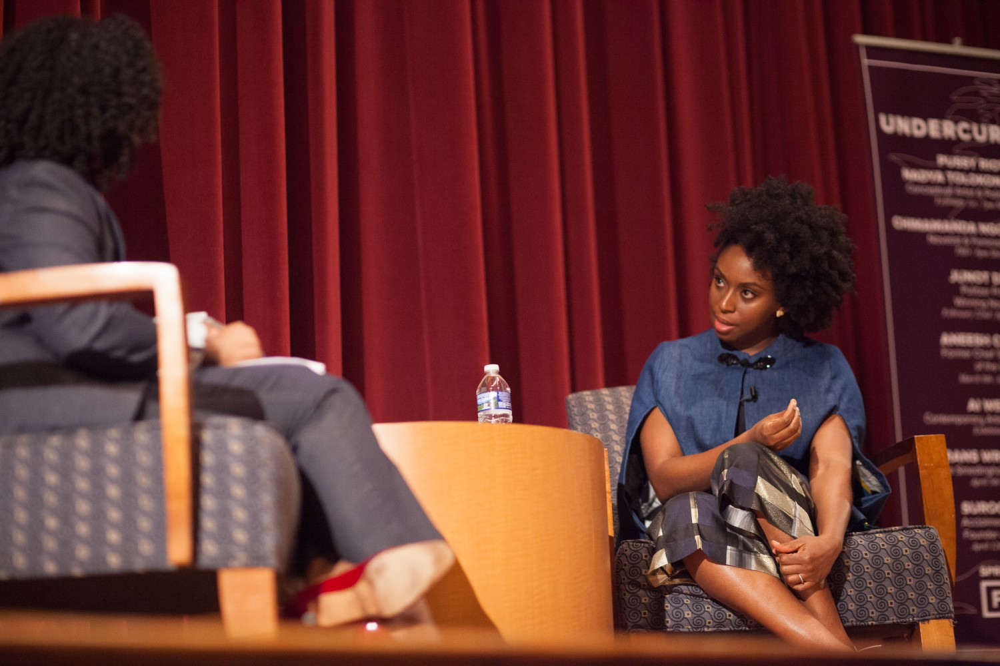

Todos nós deveríamos ser feministas

Chimamanda Ngozi Adichie (Abba, 15 de setembro de 1977) é uma escritora nigeriana. Ela é reconhecida como uma das mais importantes jovens autoras anglófonas que está tendo sucesso em atrair uma nova geração de leitores de literatura africana.
“A história sozinha cria estereótipos, e o problema com estereótipos é que não é que eles não são verdadeiros, mas que eles são incompletos. Eles fazem uma história se tornar a única história.”
Sua historia
Chimamanda nasceu na Nigéria, no estado de Anambra, mas cresceu na cidade universitária de Nsukka, no sudeste da Nigéria, onde se situa a Universidade da Nigéria. Seu pai era professor de Estatística na universidade, e sua mãe trabalhava como administradora no mesmo local. Quando completou dezenove anos, deixou a Nigéria e se mudou para os Estados Unidos da América. Depois de estudar na Universidade Drexel, na Filadélfia, Chimamanda se transferiu para a Universidade de Connecticut. Fez estudos de escrita criativa na Universidade Johns Hopkins de Baltimore, e mestrado de estudos africanos na Universidade Yale.
Seu primeiro romance, Purple Hibiscus (Hibisco roxo), foi publicado em 2003. O segundo romance, Half of a Yellow Sun (Meio sol amarelo), foi assim chamado em homenagem à bandeira da Biafra, e trata de antes e durante a guerra de Biafra. Foi publicado pela editora Knopf/Anchor em 2006, e ganhou o Orange Prize para ficção em 2007.
Fonte das informações e imagens:
http://www4.planalto.gov.br/brasilmulher/imagens/chimamanda.jpg/image_view_fullscreen http://www.bbc.com/culture/story/20130614-telling-a-new-story-of-africa https://www.chimamanda.com/media/photo-gallery/
{kind=link}